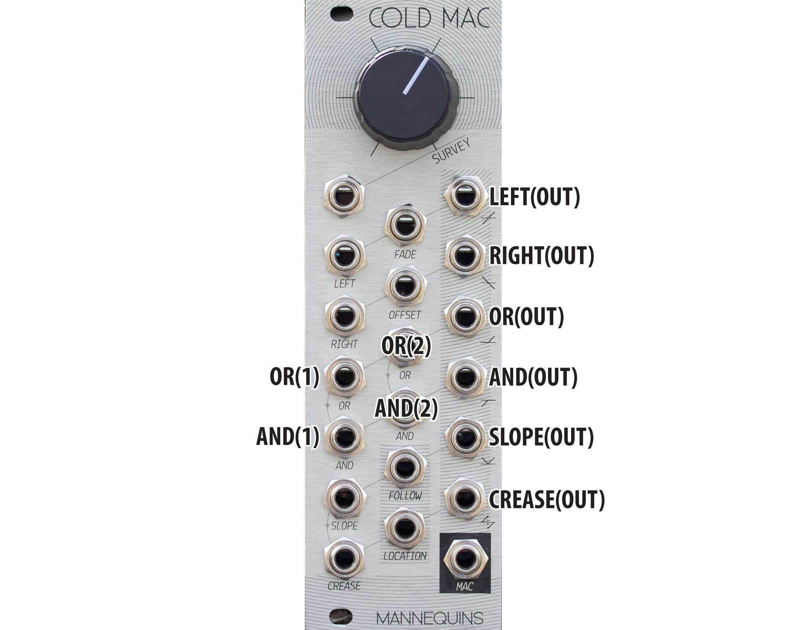
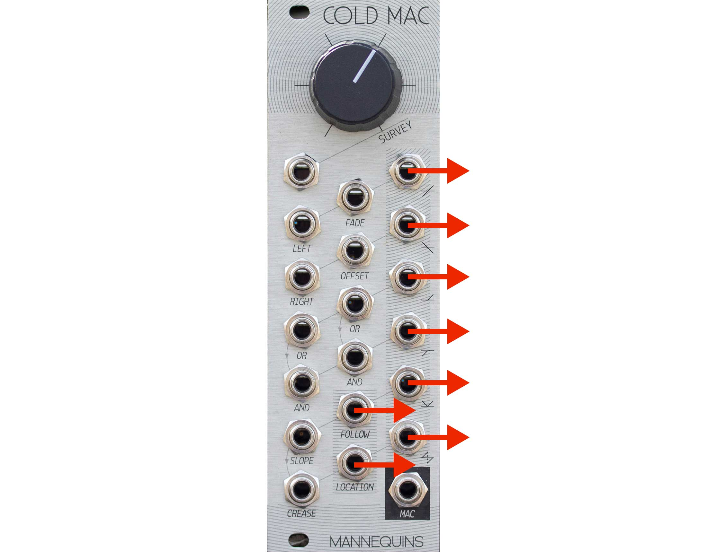
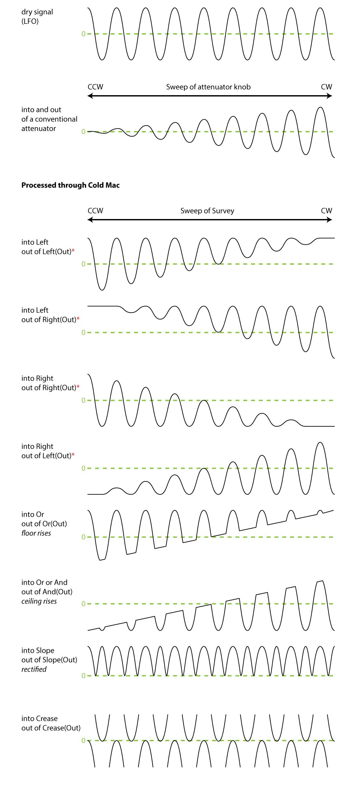
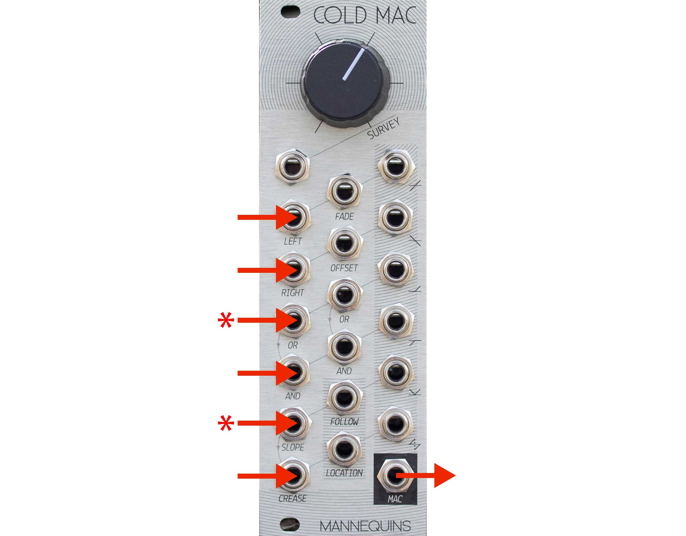
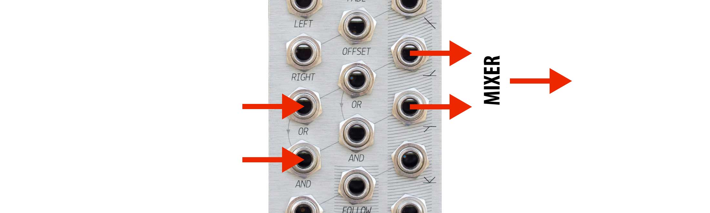

Martin Doudoroff
2018-08-01 Added Nathan Moody’s helpful Modular Patch Walkthrough 01 video (see bottom of page)
2016-02-22 Added draft section on signal inversion and offset
2015-10-04 Added video links section, table of contents
2015-09-24 LFO CV visualization and clarification re: normals
2015-09-23 correction
2015-09-22 nomenclature section & edits
2015-09-21 corrections, normalized connections summary & logical crossfade
2015-09-20 first draft
This document is an attempt to understand the Cold Mac utility module for you Eurorack synthesizers designed and manufactured by Whimsical Raps.
Note: the following is an unofficial, customer-generated document and may contain errors. The author will attempt to correct any errors as he becomes aware of them.The faceplate of Cold Mac contains a whopping 20 jacks. This document refers to each jack by its label in capital letters (e.g., SLOPE). Alas, a number of the jacks are labeled redundantly or with pictograms that don’t translate readily to words, so, taking a syntactic cue from the official documentation, we’ve adopted these names for those jacks: 
With no inputs, each of the outputs (except MAC) emits CV according to SURVEY as indicated by the little graphs by the jacks.
Due to normalizations, FOLLOW and LOCATION also emit CV based on SURVEY (more below).
You can certainly use this default CV output directly, but perhaps the primary use case is to patch modulation sources into the inputs, maybe layer in some self-patching within Cold Mac, and thereby erect a more complex web of signal processing.
Whimsical Raps’ concept of “patch surveillance” seems to be that a whole bunch of parallel CV can be processed through Cold Mac under concurrent-but-varied amplitude modulation by the sweep (or CV) of SURVEY. The number of possibilities are initially overwheling, particularly when you factor self-patching into the picture.
One way to try to understand how this works is a visual model. (This approach may not work for everyone.) The following set of graphs illustrate how a slow LFO is affected by the various elementary patch combinations, across the sweep of SURVEY. A graph of how the same LFO signal might be affected by a conventional linear attenuator is provided for contrast.
*Intrinsic to the function of the design (see Panning/Crossfading section below), LEFT is normalized to -5v and RIGHT is normalized to +5v. If you reproduce these examples yourself, and then break one or other of these normals by inserting a dummy cable into whichever input (LEFT or RIGHT) you’re not using for the LFO signal, you’ll notice that the frequency of the output signal will drop or leap up, accordingly.
Up to six audio inputs in the lower left column of jacks will be unity mixed, attenuated by SURVEY and output through MAC. MAC only passes audio, not CV. In this kind of patch, Cold Mac acts a lot like a VCA with a unity mix on the front end.
*the OR(1) and SLOPE input signals will receive 2X gain unless the normalization of the AND(1) and CREASE jacks are broken, respectively, either by other input signals or dummy cables.
With one input into LEFT, SURVEY will pan the signal between the LEFT(OUT) and RIGHT(OUT).
With one input into RIGHT, SURVEY will pan that signal in the reverse manner, between RIGHT(OUT) and LEFT(OUT).
With two signals into both LEFT and RIGHT, SURVEY will pan both signals between the outputs in an opposing manner (the signals switch places).
Patching CV into the FADE input will decouple panning from SURVEY, using the CV input instead and freeing up SURVEY for other purposes.

If you take two input signals and only a single output, SURVEY (or FADE) will effectively crossfade between the two signals to LEFT(OUT). As per above, however, both outputs are actually active, each being the reverse of the other, so the reverse crossfade will emit from RIGHT(OUT).
The OFFSET input merely mixes in an additional input signal on top of the results of the panning/crossfading at LEFT(OUT) and RIGHT(OUT). The OFFSET signal is replicated equally to both panning outputs but (in the case of audio) is not sent to MAC. The OFFSET signal is not affected by SURVEY or FADE.
If you put a signal into FADE (with no signal in LEFT or RIGHT), an inverted copy will be available from the RIGHT(OUT).
Alternatively, if you put a signal into SURVEY (with no signal in LEFT or RIGHT or FADE), an inverted copy will also be available from the RIGHT(OUT), but the signal will be offset (lower) according to the position of the knob. (Similarly, the signal out of LEFT(OUT) will not be inverted, but will be a copy of the input signal offset (higher) according to the position of the knob.)
In both scenarios above, the outputs at RIGHT(OUT) and LEFT(OUT) are affected by the default -5v and +5v signals normaled to LEFT and RIGHT, respectively. If you insert a dummy cable in either LEFT or RIGHT, that will break the normalization and constrain voltage range of the output at RIGHT(OUT) and LEFT(OUT) accordingly. Moreover, you can insert your own signals at LEFT and RIGHT to modulate the voltage range at RIGHT(OUT) and LEFT(OUT).
If you put a signal into OR(1), SURVEY effectively sets a floor for the voltage and sends the result to OR(OUT).
Patching CV into the OR(2) input will decouple the floor from SURVEY, using the CV input instead and freeing up SURVEY for other purposes.
If you put a signal into AND(1), SURVEY also effectively sets a floor for its voltage, but in the reverse direction, and sends the result to AND(OUT).
AND(1) is normalled to OR(1) so the same input signal can be processed simultaneously by both AND and OR circuits.
Patching CV into the AND(2) input will decouple the ceiling from SURVEY, using the CV input instead and freeing up SURVEY for other purposes.
If you patch two different signals simultaneously into OR(1) and AND(1), then take both outputs and mix them together, you achieve what the official documentation terms “logical crossfading” with “spectral connotations”. As you sweep SURVEY from left to right, you’re simultaneously raising the floor of first signal until its highest frequencies wink out, while lowering the floor of the second signal from nothing until the full spectrum is passed. The result is subtly different from a conventional crossfade.
Patching audio or CV into SLOPE, you get:
SURVEY has no effect in this patch arrangement.
CREASE is normaled to SLOPE, so from either the SLOPE input or—breaking the normal—the CREASE input, you get:
Again, SURVEY has no effect in this patch arrangement.
While SURVEY has no effect on the above, per se, SLOPE is normaled to SURVEY, so the current SURVEY voltage is running through all the above if no cable is patched into SLOPE (or CREASE) to break the normal.
Recapping from above:
Patching Cold Mac #1 by endor:
Whimsical Raps’ COLD MAC: An Introduction:
Whimsical Raps’ COLD MAC: Patch Surveillance:
Modular Patch Walkthrough 01 by Nathan Moody: (this video is about a lot more than Cold Mac, but effectively demonstrates its integration into a larger patch)
• • •